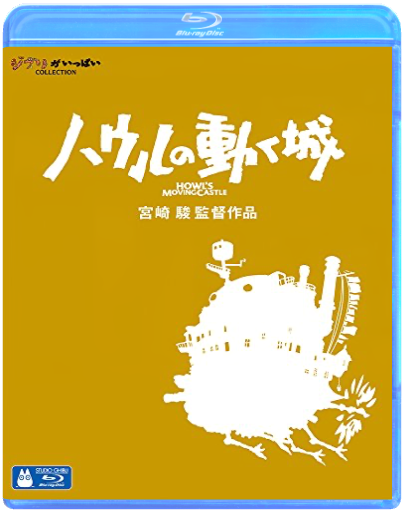

studio ghibli - 2004 - le château ambulanthayao miyazaki  The picture in this Blu-ray version is more beautiful than Ghibli DVD movies. Ghibli full COLLECTION Movies directed by Hayao Miyazaki  studio ghibli - 2008 - ponyo sur la falaisehayao miyazaki studio ghibli - 2008 - ponyo sur la falaisehayao miyazaki The picture of Blu-ray version is more beautiful than Ghibli DVD movies. 90 years old living in love. Movies directed by Hayao Miyazaki  walt disney, 42 : toy story 1walt disney walt disney, 42 : toy story 1walt disney A chaque anniversaire d'Andy, c'est la même chose ses jouets redoutent l'arrivée d'un nouveau venu qui pourrait les supplanter dans le coeur du petit garçon. Cette année là, la pire des prévisions va se réaliser : Buzz l'éclair, un cosmonaute électronique, fait une entrée triomphale. Bouleversant l'ordre des choses, il devient vite le héros d'Andy et des autres jouets. Détrôné et déshonoré, Woody le cow-boy est dès lors prêt à tout pour retrouver sa place de premier dans le coeur d'Andy et son statut de chef des jouets.  walt disney, 53 : toy story 2walt disney walt disney, 53 : toy story 2walt disney Privé de camp de vacances avec Andy parce que son bras est déchiré, Woody est relégué sur l'étagère du garçonnet. S'échappant de la maison pour sauver un autre jouet d'un vide-grenier, un collectionneur l'aperçoit et le kidnappe...  walt disney, 100 : toy story 3walt disney walt disney, 100 : toy story 3walt disney Les créateurs des très populaires films Toy Story ouvrent à nouveau le coffre à jouets et invitent les spectateurs à retrouver le monde délicieusement magique de Woody, Buzz et leurs amis. Woody et Buzz savaient bien que leur cher Andy allait grandir un jour, mais que faire lorsque ce jour est arrivé ' Dans ce troisième chapitre, Andy se prépare à partir pour l'université, et ses fidèles amis les jouets se posent beaucoup de questions quant à leur avenir. Lee Unkrich (coréalisateur de Toy Story 2 et du Monde de Nemo) réalise ce film très attendu, et Michael Arndt, le scénariste oscarisé de Little Miss Sunshine, apporte son talent unique et sa sensibilité pleine d'humour à l'histoire.  walt disney, 120 : cocowalt disney walt disney, 120 : cocowalt disney In Disney/Pixar's vibrant tale of family, fun and adventure, an aspiring young musician named Miguel (voice of newcomer Anthony Gonzalez) embarks on an extraordinary journey to the magical land of his ancestors. There, the charming trickster Héctor (voice of Gael Garci a Bernal) becomes an unexpected friend who helps Miguel uncover the mysteries behind his family s stories and traditions. |


 Made with Delicious Library
Made with Delicious LibraryNancy, State zipflap congrotus delicious library Thomas, Julien